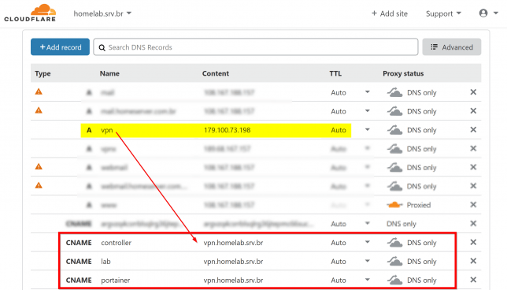

DNS Dinâmico Grátis com Docker e Cloudflare
Blog Blogtober Docker Free Stuff HomelabCompartilhe esse post nas redes sociais...
Olá Homelabers,
Qual serviço de DNS dinâmico vocês usam em seus labs ou suas empresas?
Nesse post vou mostrar a vocês como utilizar a Cloudflare como DDNS substituindo o NoIP.net ou DYN com a vantagem de ser totalmente grátis e você pode usar seu próprio domínio.
Infelizmente o meu provedor de internet não oferece a opção de comprar um IP fixo para um contrato residencial- olha a demanda existente ai Vivo Fibra - sempre que preciso expor algum serviço do meu lab para internet ou acessar minhas cameras de segurança tenho que apelar para o redirecionamento de portas no meu roteador e para facilitar utilizar um DDNS.
Há anos que uso a Cloudflare para gerenciamento de DNS dos meus domínios e eu tenho um domínio válido para usar no lab (homelab.srv.br).
No passado eu utilizava o DuckDNS como meu DNS dinâmico mas há algum tempo passei a utilizar a Cloudflare com um container Docker para atualizar o IP da minha conexão e nesse post vou mostrar a vocês como estou fazendo isso.
Eu gostaria muito que o registro.br oferecesse uma opção de gerenciamento de DNS via API.
Configuração Cloudflare
Primeiro você vai precisar criar a sua conta grátis na Cloudflare.
Após criar sua conta, você precisa mudar o servidor de DNS do registro.br para a Cloudflare.
Feito isso, crie um registro do tipo A na Cloudflare. Esse será o registro que atualizado automaticamente. No meu caso, eu usei vpn.homelab.srv.br
Docker
A segunda parte da configuração - e onde está toda a inteligência do projeto - é um container Docker. No meu caso, estou rodando esse container em um Raspberry Pi 3B, mas você pode rodar em uma VM ou onde você quiser.
Você precisa ter o Docker instalado e rodando (não vou cobrir isso neste post, mas aqui você encontra as instruções para instalar o Docker.)
Estou usando o container desse local (https://github.com/oznu/docker-cloudflare-ddns).
Aqui uso o Docker Compose para subir o container e o código yaml para executar está aqui embaixo, mas você vai precisar colocar suas informações:
version: '2'
services:
cloudflare-ddns:
image: oznu/cloudflare-ddns:latest
restart: always
environment:
- EMAIL=hello@example.com
- API_KEY=xxxxxxx
- ZONE=example.com
- SUBDOMAIN=subdomain
- PROXIED=false
Você pode copiar o arquivo docker-compose.yaml deste link
* No campo **EMAIL** você vai preencher com o e-mail usado no cadastro/login da Cloudflare.
* No campo **API_KEY** você vai preencher com o código GLOBAL API KEY que você vai encontrar [nesse link](https://dash.cloudflare.com/profile/api-tokens). Cuidado com esse código, não compartilhe com ninguem!
* No campo **ZONE** preencha com o seu domínio - no meu caso homelab.srv.br
* No campo **SUBDOMAIN** preencha com o registro que você criou na Cloudflare - no meu caso usei VPN.
Feito isso, basta rodar o container executando o comando docker-compose up -d
Após alguns segundos, o container estará ativo e rodando. Você poderá validar se o seu IP está correto na Cloudflare comparando com o site meuip.com.br
Caso você queira outros hostnames, basta criar uma entrada do tipo CNAME na Cloudflare e adicionar o registro A principal que você criou.

Próximos passos
Os próximos passos vão depender de você e infelizmente não vou conseguir postar aqui, pois cada modem/roteador tem a sua maneira de configurar o encaminhamento de portas (port forward) e também vai depender da sua operadora. Nesse site você irá encontrar instruções para a grande maioria dos roteadores consumer do mercado, se não achar o seu, o google é sempre seu amigo.
Outras opções
Se você quiser utilizar a Cloudflare, mas não quer ou não tem como executar um container Docker, existem outras opções:
* Cloudflare API - [https://api.cloudflare.com/#dns-records-for-a-zone-update-dns-record](https://api.cloudflare.com/#dns-records-for-a-zone-update-dns-record)
* ddclient - [https://www.cloudflare.com/technical-resources/#ddclient](https://www.cloudflare.com/technical-resources/#ddclient)
* DNS-O-Matic - [https://dnsomatic.com/wiki/](https://dnsomatic.com/wiki/)
* [https://github.com/bruxo00/CloudIP](https://github.com/bruxo00/CloudIP)
* [https://github.com/mark-wagner/cfdc](https://github.com/mark-wagner/cfdc)
* [https://github.com/gigili/Cloudflare-dns-update](https://github.com/gigili/Cloudflare-dns-update)
E ai? Deixe nos comentários o que você usa como solução de DDNS e se esse post te ajudou.
Até a próxima!
Compartilhe esse post nas redes sociais...Valdecir Carvalho
Nerd e pai orgulhoso da Mariana e João. Profissional Sênior de TI com foco em arquitetura de infraestrutura e cloud computing. Blogueiro, podcaster, palestrante, amante de comunidades técnicas, fotógrafo aposentado e adora jogos antigos.
#vExpert · #VMUGLeader · #VUGBrasil · #vBronwBagBrasil · #VeeamVanguard